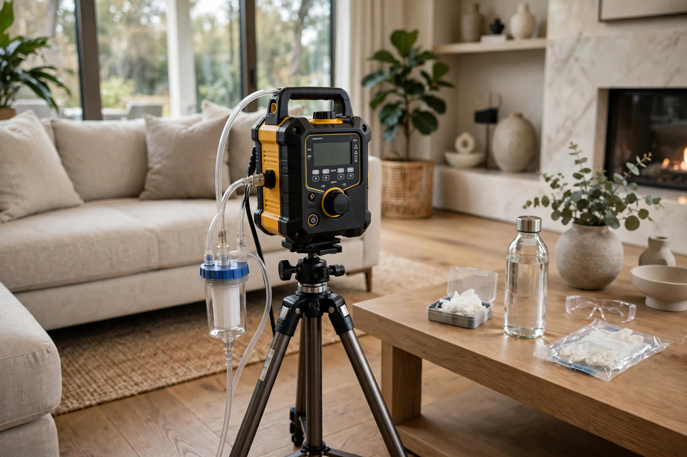

Mold Testing in Eagle, ID
Eagle's newer luxury homes look pristine, but sealed building envelopes can trap moisture where you never look. Professional mold testing tells you what's actually in your air and on your surfaces — with lab numbers, not guesses.

What lab numbers actually tell you
A spore count without context is just a number. Here's how professionals interpret the three things that matter on every report.
Indoor vs. outdoor
Indoor counts matching outdoor levels? Normal. Indoor counts far higher, or species indoors that aren't outdoors? That's the signal.
Which species dominate
Cladosporium is common everywhere. High Aspergillus indoors with low outdoor presence points to an indoor source.
Room-to-room patterns
One bedroom spiking while the rest reads normal narrows the search dramatically. Patterns across rooms tell a story single samples can't.
Straight answers
How much does mold testing cost in Eagle?
Pricing depends on how many samples your situation needs — most Eagle homes need two to four air cassettes plus any surface samples, and the lab fees are per sample. Call (321) 985-3339 and describe what you're seeing; we'll give you a straight number before anyone drives out.
Do I need testing, or just a visual inspection?
If mold is clearly visible and you already plan to remove it, testing adds little. Testing earns its keep when there's a musty smell with no visible source, health symptoms with no obvious cause, or a real-estate transaction where both sides want documentation.
How long until I get lab results?
Most labs return air-sample results in two to three business days. Rush analysis is available if you're mid-transaction and the clock is ticking — ask when you call.
Will testing tell me if mold is making my family sick?
Testing identifies what's in your air and on your surfaces. It can't diagnose health effects — that's a doctor's job. What it does is give your physician concrete exposure data instead of speculation, which the CDC notes is the useful role of environmental sampling.
Can I just buy a home test kit instead?
Hardware-store kits grow whatever lands on the dish, including normal outdoor spores that drifted in — they almost always show 'mold present' and tell you nothing about concentrations or sources. Professional testing compares indoor air to an outdoor control, which is the comparison that actually means something.
How professional testing works
Walkthrough first
We tour the home with you, note musty areas, past leaks, and humidity readings room by room before deciding where samples matter.
Targeted sampling
Air cassettes run in suspect rooms and one outdoor control. Swabs or tape lifts capture anything visible for species identification.
Accredited lab
Samples go to an independent lab. You get spore counts, species, and indoor-vs-outdoor comparisons — not a technician's opinion.
Plain-English report
We translate the lab sheet into what it means for your home and what to do next, if anything. No scare tactics, just numbers.
What drives mold testing in Eagle
Eagle's housing stock is mostly 2000s and newer — Banbury, Legacy, and the Two Rivers area. Tight construction keeps energy bills low but gives moisture fewer escape routes.
Sealed envelopes, trapped humidity
Newer Eagle homes are built tight. Showers, cooking, and even breathing add gallons of moisture to indoor air daily. Without balanced ventilation, that humidity condenses inside wall cavities and attic spaces where mold feeds quietly for months.
Boise River humidity corridor
Homes near the river and the cottonwood stands along it sit in a naturally more humid microclimate. Morning fog and riverside dampness raise the baseline moisture that building materials absorb, especially in lower levels and north-facing rooms.
High-end finishes hide early signs
Custom cabinetry, stone veneer, and built-in shelving look flawless — and they cover the exact surfaces where early mold starts. By the time staining shows through premium finishes, the colony behind them is well established.
Three ways we test
Air sampling
A calibrated pump draws room air through a cassette for a set time. The lab counts spores per cubic meter and identifies the genera present, then compares indoor levels against the outdoor baseline.
Surface sampling
Tape lifts and swabs from visible growth or suspect staining go straight to the microscope. This confirms whether that dark patch is actually mold and which type.
Moisture mapping
Pin and pinless meters trace dampness through drywall, trim, and subfloor. Mold needs moisture — finding the wettest spots tells us where to sample and where the source hides.
A family in Legacy notices their daughter's allergies spike every evening at home but clear up on vacation. No visible mold anywhere. Testing finds elevated Aspergillus counts in the primary bedroom — traced to a slow HVAC condensate drip inside a wall chase. The lab numbers give them a clear target instead of months of guessing.
What testing can't do alone
A lab report identifies the problem. Fixing it means removing the moisture source and the affected material — testing is step one, not the whole job.
- Keep indoor humidity between 30 and 50 percent — the EPA's recommended range for discouraging mold growth.
- Run bath fans 20 minutes after showers and range hoods while cooking.
- Fix the leak or condensation source the testing pointed to before any cleanup.
Not sure what you're breathing?
One call. We'll ask what you're noticing and give you a straight answer on whether testing is worth it.